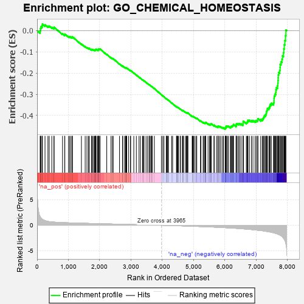
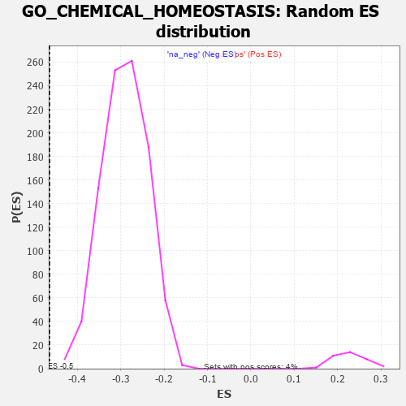

| | | Dataset | 7d |
| Phenotype | NoPhenotypeAvailable |
| Upregulated in class | na_neg |
| GeneSet | GO_CHEMICAL_HOMEOSTASIS |
| Enrichment Score (ES) | -0.4644579 |
| Normalized Enrichment Score (NES) | -1.6008126 |
| Nominal p-value | 0.0 |
| FDR q-value | 0.09443554 |
| FWER p-Value | 1.0 |
Table: GSEA Results Summary

Fig 1: Enrichment plot: GO_CHEMICAL_HOMEOSTASIS
Profile of the Running ES Score & Positions of GeneSet Members on the Rank Ordered List
| PROBE | GENE SYMBOL | GENE_TITLE | RANK IN GENE LIST | RANK METRIC SCORE | RUNNING ES | CORE ENRICHMENT | | 1 | IRS1 | | | 98 | 1.659 | -0.0001 | No |
| 2 | DISP3 | | | 110 | 1.525 | 0.0100 | No |
| 3 | ADCY8 | | | 124 | 1.418 | 0.0191 | No |
| 4 | CSRP3 | | | 161 | 1.186 | 0.0234 | No |
| 5 | DGAT1 | | | 171 | 1.146 | 0.0309 | No |
| 6 | THADA | | | 253 | 0.931 | 0.0275 | No |
| 7 | CLN5 | | | 346 | 0.751 | 0.0214 | No |
| 8 | BAX | | | 387 | 0.711 | 0.0216 | No |
| 9 | LRP1 | | | 470 | 0.648 | 0.0159 | No |
| 10 | NR1I3 | | | 539 | 0.615 | 0.0118 | No |
| 11 | SRF | | | 542 | 0.615 | 0.0162 | No |
| 12 | GLRX3 | | | 813 | 0.529 | -0.0146 | No |
| 13 | PYGL | | | 882 | 0.510 | -0.0195 | No |
| 14 | RMI1 | | | 886 | 0.509 | -0.0160 | No |
| 15 | MEN1 | | | 1003 | 0.483 | -0.0273 | No |
| 16 | AKT1 | | | 1040 | 0.476 | -0.0284 | No |
| 17 | FOXK2 | | | 1081 | 0.467 | -0.0300 | No |
| 18 | G6PC | | | 1121 | 0.459 | -0.0315 | No |
| 19 | SRC | | | 1128 | 0.459 | -0.0288 | No |
| 20 | P2RY1 | | | 1416 | 0.407 | -0.0627 | No |
| 21 | SCO1 | | | 1536 | 0.385 | -0.0751 | No |
| 22 | CUTC | | | 1593 | 0.375 | -0.0795 | No |
| 23 | DDB1 | | | 1642 | 0.366 | -0.0829 | No |
| 24 | ACOX3 | | | 1670 | 0.361 | -0.0837 | No |
| 25 | JPH1 | | | 1741 | 0.347 | -0.0901 | No |
| 26 | SLMAP | | | 1744 | 0.346 | -0.0877 | No |
| 27 | LRP5 | | | 1769 | 0.342 | -0.0882 | No |
| 28 | COX19 | | | 1807 | 0.336 | -0.0904 | No |
| 29 | GATA4 | | | 1837 | 0.330 | -0.0917 | No |
| 30 | FOXK1 | | | 1859 | 0.326 | -0.0919 | No |
| 31 | SMAD4 | | | 1860 | 0.326 | -0.0894 | No |
| 32 | NEO1 | | | 1879 | 0.323 | -0.0893 | No |
| 33 | NCOA5 | | | 1884 | 0.322 | -0.0874 | No |
| 34 | HACD3 | | | 1932 | 0.315 | -0.0911 | No |
| 35 | MCUR1 | | | 1953 | 0.313 | -0.0913 | No |
| 36 | MICU1 | | | 1954 | 0.313 | -0.0889 | No |
| 37 | CCR4 | | | 1959 | 0.312 | -0.0871 | No |
| 38 | BRSK2 | | | 1979 | 0.308 | -0.0872 | No |
| 39 | FOXO4 | | | 2004 | 0.304 | -0.0880 | No |
| 40 | RAF1 | | | 2011 | 0.303 | -0.0865 | No |
| 41 | MYLIP | | | 2225 | 0.272 | -0.1119 | No |
| 42 | SIN3A | | | 2361 | 0.251 | -0.1273 | No |
| 43 | BTBD9 | | | 2407 | 0.245 | -0.1313 | No |
| 44 | MET | | | 2430 | 0.240 | -0.1323 | No |
| 45 | ROGDI | | | 2633 | 0.207 | -0.1568 | No |
| 46 | RORA | | | 2730 | 0.193 | -0.1677 | No |
| 47 | CUL1 | | | 2735 | 0.193 | -0.1667 | No |
| 48 | AQP3 | | | 2796 | 0.184 | -0.1731 | No |
| 49 | PCK2 | | | 2823 | 0.180 | -0.1750 | No |
| 50 | CAND1 | | | 2845 | 0.177 | -0.1764 | No |
| 51 | CLN6 | | | 2847 | 0.177 | -0.1752 | No |
| 52 | WDTC1 | | | 2865 | 0.172 | -0.1761 | No |
| 53 | ERO1A | | | 2925 | 0.162 | -0.1825 | No |
| 54 | ANO1 | | | 2982 | 0.152 | -0.1885 | No |
| 55 | ISCU | | | 2989 | 0.151 | -0.1882 | No |
| 56 | CHP1 | | | 3089 | 0.138 | -0.1999 | No |
| 57 | PAX6 | | | 3170 | 0.127 | -0.2092 | No |
| 58 | COX11 | | | 3256 | 0.113 | -0.2193 | No |
| 59 | SMAD3 | | | 3303 | 0.105 | -0.2244 | No |
| 60 | SMAD7 | | | 3369 | 0.093 | -0.2321 | No |
| 61 | DDX3X | | | 3388 | 0.091 | -0.2337 | No |
| 62 | KCTD7 | | | 3417 | 0.088 | -0.2367 | No |
| 63 | CDK5 | | | 3480 | 0.080 | -0.2441 | No |
| 64 | ABCB7 | | | 3530 | 0.071 | -0.2498 | No |
| 65 | GPR18 | | | 3578 | 0.063 | -0.2554 | No |
| 66 | CHERP | | | 3587 | 0.062 | -0.2560 | No |
| 67 | MAPK3 | | | 3589 | 0.062 | -0.2556 | No |
| 68 | RIC3 | | | 3629 | 0.055 | -0.2602 | No |
| 69 | FIS1 | | | 3654 | 0.051 | -0.2629 | No |
| 70 | SKP1 | | | 3663 | 0.049 | -0.2636 | No |
| 71 | ABCD1 | | | 3677 | 0.047 | -0.2649 | No |
| 72 | HTR1B | | | 3745 | 0.035 | -0.2733 | No |
| 73 | IGF1R | | | 3970 | -0.002 | -0.3021 | No |
| 74 | PARP1 | | | 4014 | -0.010 | -0.3076 | No |
| 75 | ATG5 | | | 4051 | -0.016 | -0.3121 | No |
| 76 | ABL1 | | | 4125 | -0.027 | -0.3213 | No |
| 77 | PLCE1 | | | 4127 | -0.028 | -0.3212 | No |
| 78 | WNK3 | | | 4153 | -0.034 | -0.3242 | No |
| 79 | HNF4A | | | 4157 | -0.034 | -0.3243 | No |
| 80 | PDX1 | | | 4179 | -0.038 | -0.3267 | No |
| 81 | ENY2 | | | 4195 | -0.041 | -0.3284 | No |
| 82 | USF1 | | | 4296 | -0.059 | -0.3408 | No |
| 83 | OPA1 | | | 4330 | -0.065 | -0.3446 | No |
| 84 | TMCO1 | | | 4451 | -0.085 | -0.3594 | No |
| 85 | NEDD8 | | | 4465 | -0.087 | -0.3604 | No |
| 86 | LRRK2 | | | 4467 | -0.087 | -0.3598 | No |
| 87 | JPH3 | | | 4481 | -0.091 | -0.3608 | No |
| 88 | NPC2 | | | 4498 | -0.093 | -0.3622 | No |
| 89 | NPTN | | | 4519 | -0.098 | -0.3640 | No |
| 90 | MICU3 | | | 4571 | -0.110 | -0.3698 | No |
| 91 | CMA1 | | | 4580 | -0.114 | -0.3699 | No |
| 92 | LETM1 | | | 4644 | -0.127 | -0.3771 | No |
| 93 | NMUR2 | | | 4646 | -0.127 | -0.3762 | No |
| 94 | ITPR1 | | | 4661 | -0.130 | -0.3771 | No |
| 95 | CLCN3 | | | 4678 | -0.134 | -0.3781 | No |
| 96 | CNNM4 | | | 4738 | -0.147 | -0.3846 | No |
| 97 | PLCG1 | | | 4770 | -0.151 | -0.3875 | No |
| 98 | RTN4 | | | 4783 | -0.154 | -0.3878 | No |
| 99 | MYO5A | | | 4787 | -0.155 | -0.3870 | No |
| 100 | P2RX4 | | | 4813 | -0.161 | -0.3891 | No |
| 101 | FBXW7 | | | 4816 | -0.161 | -0.3881 | No |
| 102 | ADCK1 | | | 4953 | -0.188 | -0.4042 | No |
| 103 | TRA2B | | | 4962 | -0.191 | -0.4038 | No |
| 104 | ACKR4 | | | 4981 | -0.194 | -0.4046 | No |
| 105 | DMXL1 | | | 5004 | -0.198 | -0.4060 | No |
| 106 | PDPK1 | | | 5043 | -0.207 | -0.4093 | No |
| 107 | DRD2 | | | 5088 | -0.221 | -0.4133 | No |
| 108 | ABHD4 | | | 5100 | -0.224 | -0.4130 | No |
| 109 | GPR4 | | | 5219 | -0.250 | -0.4263 | No |
| 110 | USF2 | | | 5232 | -0.252 | -0.4259 | No |
| 111 | RAB7A | | | 5302 | -0.271 | -0.4328 | No |
| 112 | NPY2R | | | 5331 | -0.281 | -0.4343 | No |
| 113 | ITPR3 | | | 5361 | -0.288 | -0.4358 | No |
| 114 | CSMD1 | | | 5377 | -0.290 | -0.4356 | No |
| 115 | GRIN1 | | | 5381 | -0.291 | -0.4338 | No |
| 116 | DLG4 | | | 5388 | -0.293 | -0.4323 | No |
| 117 | ACOX2 | | | 5461 | -0.310 | -0.4392 | No |
| 118 | FABP4 | | | 5509 | -0.322 | -0.4429 | No |
| 119 | VDR | | | 5517 | -0.325 | -0.4413 | No |
| 120 | SIDT2 | | | 5542 | -0.331 | -0.4419 | No |
| 121 | ABCG2 | | | 5556 | -0.335 | -0.4410 | No |
| 122 | EHD1 | | | 5560 | -0.336 | -0.4389 | No |
| 123 | WNK1 | | | 5650 | -0.362 | -0.4476 | No |
| 124 | SOAT1 | | | 5657 | -0.363 | -0.4456 | No |
| 125 | CALCR | | | 5730 | -0.386 | -0.4520 | No |
| 126 | CIB2 | | | 5774 | -0.398 | -0.4545 | No |
| 127 | ABCG1 | | | 5778 | -0.399 | -0.4519 | No |
| 128 | TRPC6 | | | 5784 | -0.401 | -0.4495 | No |
| 129 | ANXA7 | | | 5827 | -0.413 | -0.4518 | No |
| 130 | CDK16 | | | 5869 | -0.425 | -0.4539 | No |
| 131 | STK11 | | | 5922 | -0.443 | -0.4572 | No |
| 132 | CXCR5 | | | 5954 | -0.456 | -0.4578 | No |
| 133 | PTPRN | | | 6007 | -0.474 | -0.4609 | Yes |
| 134 | XBP1 | | | 6011 | -0.475 | -0.4577 | Yes |
| 135 | TRPC3 | | | 6035 | -0.483 | -0.4570 | Yes |
| 136 | RAC1 | | | 6036 | -0.484 | -0.4533 | Yes |
| 137 | PPT1 | | | 6038 | -0.485 | -0.4498 | Yes |
| 138 | CALR | | | 6077 | -0.499 | -0.4509 | Yes |
| 139 | ABCB6 | | | 6106 | -0.507 | -0.4507 | Yes |
| 140 | STIM1 | | | 6169 | -0.528 | -0.4547 | Yes |
| 141 | ATP7B | | | 6194 | -0.535 | -0.4537 | Yes |
| 142 | INSR | | | 6204 | -0.538 | -0.4508 | Yes |
| 143 | RGN | | | 6233 | -0.547 | -0.4503 | Yes |
| 144 | XPR1 | | | 6250 | -0.555 | -0.4481 | Yes |
| 145 | AP3D1 | | | 6261 | -0.558 | -0.4452 | Yes |
| 146 | STK39 | | | 6274 | -0.563 | -0.4425 | Yes |
| 147 | GALR2 | | | 6355 | -0.599 | -0.4483 | Yes |
| 148 | TLCD2 | | | 6361 | -0.601 | -0.4444 | Yes |
| 149 | NPC1 | | | 6364 | -0.602 | -0.4401 | Yes |
| 150 | TRPM4 | | | 6390 | -0.612 | -0.4387 | Yes |
| 151 | ABCA2 | | | 6433 | -0.634 | -0.4393 | Yes |
| 152 | LIPG | | | 6468 | -0.648 | -0.4388 | Yes |
| 153 | TRPV4 | | | 6515 | -0.668 | -0.4396 | Yes |
| 154 | P2RX5 | | | 6576 | -0.699 | -0.4421 | Yes |
| 155 | CLN3 | | | 6580 | -0.699 | -0.4372 | Yes |
| 156 | TLCD1 | | | 6581 | -0.700 | -0.4319 | Yes |
| 157 | ARF1 | | | 6583 | -0.701 | -0.4267 | Yes |
| 158 | MPC2 | | | 6683 | -0.753 | -0.4338 | Yes |
| 159 | EGFR | | | 6708 | -0.765 | -0.4311 | Yes |
| 160 | UNC80 | | | 6724 | -0.770 | -0.4272 | Yes |
| 161 | ABHD8 | | | 6735 | -0.778 | -0.4226 | Yes |
| 162 | TRPM8 | | | 6781 | -0.800 | -0.4224 | Yes |
| 163 | PTH1R | | | 6845 | -0.839 | -0.4241 | Yes |
| 164 | HEXB | | | 6894 | -0.864 | -0.4238 | Yes |
| 165 | PIM3 | | | 6964 | -0.914 | -0.4257 | Yes |
| 166 | CCR2 | | | 7003 | -0.939 | -0.4235 | Yes |
| 167 | FBXL5 | | | 7046 | -0.965 | -0.4217 | Yes |
| 168 | GRM5 | | | 7053 | -0.969 | -0.4151 | Yes |
| 169 | CFTR | | | 7143 | -1.030 | -0.4188 | Yes |
| 170 | TSPO | | | 7194 | -1.065 | -0.4172 | Yes |
| 171 | CNGB1 | | | 7222 | -1.096 | -0.4123 | Yes |
| 172 | ABCA1 | | | 7243 | -1.113 | -0.4065 | Yes |
| 173 | HCN4 | | | 7260 | -1.134 | -0.4000 | Yes |
| 174 | ANK2 | | | 7298 | -1.170 | -0.3959 | Yes |
| 175 | GRN | | | 7319 | -1.194 | -0.3895 | Yes |
| 176 | TRPM1 | | | 7324 | -1.197 | -0.3809 | Yes |
| 177 | GPD1L | | | 7343 | -1.215 | -0.3741 | Yes |
| 178 | WDR35 | | | 7357 | -1.225 | -0.3665 | Yes |
| 179 | GRM1 | | | 7404 | -1.272 | -0.3628 | Yes |
| 180 | OTC | | | 7430 | -1.305 | -0.3561 | Yes |
| 181 | KCNB1 | | | 7444 | -1.327 | -0.3478 | Yes |
| 182 | VAPB | | | 7482 | -1.378 | -0.3421 | Yes |
| 183 | GRIK2 | | | 7552 | -1.471 | -0.3399 | Yes |
| 184 | CALM1 | | | 7567 | -1.499 | -0.3303 | Yes |
| 185 | TRPV6 | | | 7569 | -1.502 | -0.3191 | Yes |
| 186 | TTPA | | | 7575 | -1.516 | -0.3083 | Yes |
| 187 | GRM2 | | | 7596 | -1.547 | -0.2992 | Yes |
| 188 | TRPA1 | | | 7625 | -1.608 | -0.2906 | Yes |
| 189 | PKD1 | | | 7628 | -1.611 | -0.2787 | Yes |
| 190 | MCU | | | 7644 | -1.637 | -0.2683 | Yes |
| 191 | TRPM2 | | | 7680 | -1.712 | -0.2598 | Yes |
| 192 | ANK3 | | | 7690 | -1.740 | -0.2478 | Yes |
| 193 | ADCY1 | | | 7695 | -1.752 | -0.2351 | Yes |
| 194 | RHAG | | | 7701 | -1.769 | -0.2224 | Yes |
| 195 | ADCY9 | | | 7704 | -1.783 | -0.2091 | Yes |
| 196 | BOK | | | 7715 | -1.817 | -0.1967 | Yes |
| 197 | P2RY8 | | | 7750 | -1.912 | -0.1866 | Yes |
| 198 | TRPM7 | | | 7761 | -1.936 | -0.1733 | Yes |
| 199 | PDE4D | | | 7764 | -1.944 | -0.1588 | Yes |
| 200 | GRIK5 | | | 7792 | -2.044 | -0.1469 | Yes |
| 201 | PKD2 | | | 7822 | -2.167 | -0.1342 | Yes |
| 202 | GRIA1 | | | 7836 | -2.260 | -0.1188 | Yes |
| 203 | CALM3 | | | 7869 | -2.525 | -0.1038 | Yes |
| 204 | FYN | | | 7881 | -2.622 | -0.0854 | Yes |
| 205 | CAV3 | | | 7896 | -2.739 | -0.0665 | Yes |
| 206 | NPSR1 | | | 7913 | -2.947 | -0.0463 | Yes |
| 207 | ARRB1 | | | 7935 | -3.377 | -0.0234 | Yes |
| 208 | XIAP | | | 7947 | -3.696 | 0.0031 | Yes |
Table: GSEA details [plain text format]

Fig 2: GO_CHEMICAL_HOMEOSTASIS: Random ES distribution
Gene set null distribution of ES for GO_CHEMICAL_HOMEOSTASIS